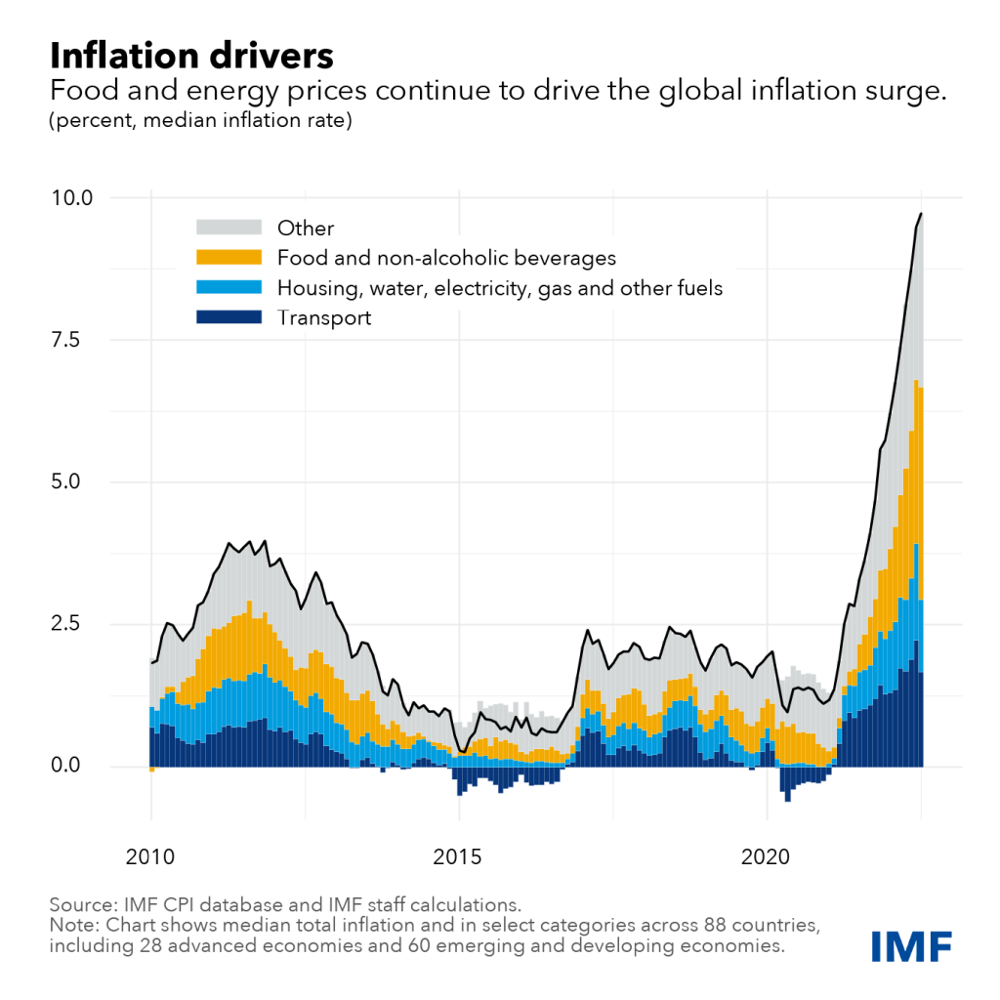
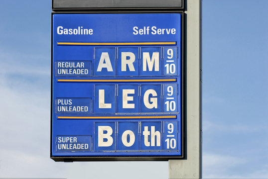

In today's rapidly changing financial landscape, understanding market volatility is crucial for both seasoned investors and newcomers alike. Market volatility refers to the rate at which the price of an asset increases or decreases for a set of returns. This article delves into the causes of market volatility, its implications for your investment strategy, and how to navigate uncertain times...
Understanding Market Volatility
Saketh Satti
Posted on JAN 22, 2024
Posted on JAN 22, 2024
Market Analysis |
Investing
Full Article
A Global Spike in Inflation is Rewriting Financial Markets
A global spike in inflation is now rewriting financial markets as central banks fight against rising prices. Inflation rates are surging to levels not seen in decades across the United States, Europe, and other regions. A confluence of factors has brought about this rise: disrupted supply chains, shortages of labor, and pent-up demand by consumers after pandemic lockdowns. Central banks around the world, including the U.S. Federal Reserve and the European Central Bank, have responded by hiking interest rates, fueling fears of a possible recession.
Underlying Causes of Inflation
According to the International Monetary Fund (IMF), the rise in inflation is due to both demand and supply-side factors. On the demand side, expansive fiscal policies and savings accumulated during lockdowns have buttressed spending by consumers. On the supply side, persistent disruptions to global supply chains have limited the availability of goods, pushing prices upward.
The energy sector has been particularly affected. The Russia-Ukraine conflict has caused oil and gas prices to shoot up. Europe, which heavily depends on Russian energy exports, is facing an energy crunch that has further fueled inflation (International Energy Agency).
Central Bank Responses
Central banks are tightening monetary policies to fight inflation. The Federal Reserve has raised interest rates multiple times this year alone, marking the most aggressive rate-hike cycle in recent history (Federal Reserve Monetary Policy). Both the European Central Bank and the Bank of England have also raised rates, although there are concerns about economic growth.
The measures are designed to tame inflation by slowing down economic activity. However, higher rates also imply increased borrowing costs for consumers and businesses, which could reduce investment and spending. Indeed, some economists have warned that this could tip economies into recession, according to Bloomberg Economics.
Impact on Investor Sentiment
Investors are looking for ways to handle a more turbulent market as they try to adapt to the new economic environment. The equity markets have started to see bigger swings, and growth stocks are suffering especially since they are sensitive to interest rate moves. The technology sector has registered steep sell-offs that have wiped out their pandemic-era gains (CNBC Technology).
In contrast, commodities and inflation-protected securities have been in favor. Gold prices have increased due to a surge in demand for safe-haven assets. Moreover, the strong U.S. dollar—strengthened by the higher interest rates—has also affected emerging markets by making dollar-denominated debt more costly (Wall Street Journal).
Strategies for Investors
Financial advisors have one word: "Proceed with caution." Diversification is still the main way to reduce risk during these uncertain times. Consider also allocating to less economically sensitive sectors, such as consumer staples and healthcare. Inflation-indexed bonds, real estate, and commodities are also capable of acting as hedges against inflation.
One must also pay attention to the communications from central banks for future policy guidance. The inflation-economic growth trade-off will be an essential factor for investment decisions over time.
Looking Ahead
The outlook for inflation is uncertain. The resolution of geopolitical conflicts, normalization of supply chains, and the effectiveness of monetary policies are some of the factors that will determine future trends. According to the OECD, inflation may only start moderating toward the end of 2024, subject to several global developments.
In the meantime, investors should stay informed and flexible, ready to adjust their strategies as conditions evolve. By focusing on long-term goals and maintaining a well-balanced portfolio, they can navigate the challenges posed by the current inflationary environment.
Global Supply Chain Crisis Hinders Economic Recovery
Saketh Satti
Posted on FEB 15, 2024
Posted on FEB 15, 2024
Supply Chain |
Global Economy
The global supply chain crisis is the greatest hindrance to economic recovery, with disruptions now being felt across the world. Component shortages, congestion at ports, and increases in freight costs are adding up to a lot of delays and price rises for both consumers and businesses...
Full Article
Global Supply Chain Crisis Hinders Economic Recovery

The global supply chain crisis is the greatest hindrance to economic recovery, with disruptions now being felt across the world. Component shortages, congestion at ports, and increases in freight costs are adding up to significant delays and price rises for both consumers and businesses. The World Economic Forum projects that these challenges will continue through 2024 and reduce global growth estimates.
Causes of the Disruptions
Several factors contribute to ongoing supply chain issues. The COVID-19 pandemic initially disrupted production and logistics, and subsequent waves have continued to affect labor availability. Additionally, geopolitical tensions, such as trade disputes and sanctions, have complicated international trade routes (World Trade Organization).
Natural disasters have also played a role. Events such as floods in Asia and hurricanes in the Americas have damaged infrastructure and caused further delays. Driven by increased demand for electronics and limited manufacturing capacity, the semiconductor shortage has especially crippled the automotive and tech sectors.
Impact on Industries
All industries are affected. The chip shortage has forced the auto industry to halt production and reduce the availability of vehicles, causing an increase in prices. The electronics industry can't meet the consumer demand for devices like smartphones and laptops (IDC Research).
Retailers are experiencing inventory shortages, especially ahead of peak shopping seasons. This has led to empty shelves and lost sales opportunities. The construction industry is also impacted by lumber and steel shortages, causing project delays and increased costs.
Economic Consequences
The supply chain crisis feeds into rising inflation because scarcity drives up prices. These inflationary pressures have central banks worried and complicate monetary policy decisions. The World Bank has revised its global growth forecast downward, citing supply chain disruptions as a major reason.
This particularly hurts small and medium-sized enterprises, which do not have the resources to absorb increased costs or change course quickly. This may increase rates of business failure, changes in employment, and economic instability.
Mitigation Strategies
Companies are adapting in several ways. Some are diversifying their supplier base to reduce dependence on single-source suppliers, especially those in geopolitically sensitive regions. Others are increasing inventory levels despite the higher carrying costs, hoping to buffer against future disruptions (McKinsey & Company).
Technological solutions are also being explored. Artificial intelligence and data analytics are useful in forecasting demand and optimizing logistics. Blockchain technology is being tested for increasing transparency and traceability of supply chains.
Government Interventions
The critical nature of supply chain resilience is being recognized by governments, with initiatives in infrastructure improvement investments, incentives for local manufacturing, and trade policy revisions to reduce bottlenecks. For instance, the United States has initiated steps to strengthen domestic semiconductor production (The White House).
Outlook for the Future
While challenges remain, experts believe the supply chain landscape will gradually improve. This, however, will require coordinated efforts by businesses, governments, and international organizations. Emphasizing resilience and flexibility over efficiency may become the new norm in supply chain management.
Consumers might also have to adjust their expectations regarding product availability and price. Patience and planning will be required, especially during high-demand periods. By learning from present challenges, the world can devise more resilient supply chains that can withstand future disruptions.
Cryptocurrency Volatility in 2023: What Investors Need to Know
Saketh Satti
Posted on MAR 10, 2024
Posted on MAR 10, 2024
Cryptocurrency |
Investment
The year 2023 has been marked by very strong volatility in the cryptocurrency market, with top digital assets like Bitcoin and Ethereum swinging sharply in price...
Full Article
Cryptocurrency Volatility in 2023: What Investors Need to Know

The year 2023 has been marked by strong volatility in the cryptocurrency market, with top digital assets like Bitcoin and Ethereum swinging sharply in price. This instability results from a confluence of regulatory developments, market speculation, and macroeconomic factors. Understanding these dynamics is crucial for any investor looking to navigate the crypto landscape.
Regulatory Developments
Governments have been increasingly focusing on the regulation of cryptocurrencies. For instance, in May, the U.S. Securities and Exchange Commission (SEC) announced it would begin regulating crypto exchanges and overseeing Initial Coin Offerings (ICOs) more closely. China ratcheted up its clampdown by banning cryptocurrency mining and transactions, which greatly diminished global hash rates (CNBC).
These actions contribute to market uncertainty. While some investors fear that stringent regulations could hinder innovation, others believe that clear regulatory frameworks will legitimize the market and attract institutional investment.
Market Speculation and Sentiment
Prices of cryptocurrencies are highly sensitive to market sentiment. Comments from influential persons, such as CEOs of major companies, can swing the prices either up or down. These effects are amplified on various social media platforms, where prices move rapidly on speculation rather than fundamentals (Forbes Advisor).
Moreover, the rise of meme coins and speculative tokens adds to market volatility. Should these investors—drawn in large part by the promise of easy profits—create a kind of bubble, it might burst at some point and cause significant losses.
Macroeconomic Factors
Larger economic trends also play a part. Inflationary pressures or the devaluation of a country's currency have driven people to seek digital assets in order to preserve their wealth. On the other hand, increases in interest rates and the strengthening U.S. dollar can weaken cryptocurrencies, as traditional assets now look relatively more attractive (Bloomberg Crypto).
Geopolitical events, such as conflicts or trade disputes, may also shape the course of crypto markets. For instance, economic sanctions could lead to an increase in the adoption of cryptocurrencies in affected regions as people seek alternative means of transacting.
Investor Considerations
Investments in cryptocurrency are very risky because of their high volatility. Financial experts recommend that individuals conduct in-depth research before investing and consider their risk tolerance. Diversification of the crypto portfolio and across asset classes can help spread potential losses (Investopedia).
Another critical concern is security. Investors should ensure they use reputable exchanges and keep their assets in secure wallets to avoid hacking and fraud.
The Future of Cryptocurrencies
Despite challenges, the underlying blockchain technology is gaining mainstream traction. Decentralized Finance (DeFi) platforms and Non-Fungible Tokens (NFTs) are becoming stronger subsectors within the crypto space. Institutional adoption is increasing; major financial institutions are exploring offering crypto-related services (PwC Report).
As the market matures, greater stability may emerge. Regulatory clarity could reduce uncertainty, and technological advancements may address scalability and security issues. Investors who stay informed and approach the market cautiously may find opportunities in this evolving landscape.
The Global Energy Crisis: Impact on Markets and the Economy
Saketh Satti
Posted on APR 5, 2024
Posted on APR 5, 2024
Energy |
Global Economy
The global energy crisis has continued to deteriorate, taking many markets by storm. Increasing prices of oil, natural gas, and coal have had financial consequences for businesses and consumers...
Full Article
The Global Energy Crisis: Impact on Markets and the Economy
The global energy crisis has continued to deteriorate, taking many markets by storm. Increasing prices of oil, natural gas, and coal have had financial consequences for businesses and consumers, contributing to inflationary pressures and an overall slowdown in economic growth. The crisis shows that energy markets and the world economy are deeply interconnected.
Contributing Factors
Several factors have contributed to the current state of the energy crisis:
- Post-pandemic Economic Rebound: The global economic rebound has increased energy demand at a pace that supply could not adapt to fast enough.
- Geopolitical Tensions: The Russia-Ukraine war has disrupted energy supplies, particularly in Europe, as sanctions on Russia, one of the world's largest energy producers, have dramatically reduced the availability of oil and gas on international markets.
- Underinvestment in Fossil Fuel Infrastructure: The transition to renewable energy has contributed to underinvestment in fossil fuel infrastructure, which further constrains supply.
- Extreme Weather Events: Climate change-related events like hurricanes and floods have affected energy production and distribution networks.
Impact on Industries and Consumers
This energy crisis has sent shockwaves across energy-dependent industries. Their operations have become significantly more costly due to rising energy prices. The manufacturing sector, which relies on energy-intensive processes, has reported reduced profitability, and in some cases, reduced production. The transportation industry is also feeling the strain from increased fuel costs, which are affecting logistics and supply chains (Bloomberg Energy).
Consumers are feeling the pinch through higher utility bills and gasoline prices. In some regions, households are struggling with energy poverty as costs become unaffordable. Governments are being forced to introduce relief measures, such as subsidies or price caps, to protect vulnerable populations.
Global Market Volatility
The energy crisis has added to volatility in global markets. Rising energy prices are a major driver of inflation, which has led central banks to consider or implement interest rate hikes. Further monetary tightening could slow economic growth and raise concerns about stagflation—a combination of stagnation and inflation (Financial Times).
Commodity markets have also seen increased activity, with investors speculating on the price of energy. This speculation can amplify price movements, making planning and budgeting even more challenging for businesses.
Long-Term Implications
This crisis brings to light the importance of balancing the energy transition. While reducing carbon emissions is critical to combat climate change, it is equally important to ensure energy security and affordability. Governments and industry leaders are now re-evaluating energy policies to address these challenges (World Economic Forum).
Investments in renewable energy infrastructure are increasing. Technologies such as wind, solar, and battery storage are becoming viable alternatives to fossil fuels. However, scaling these solutions takes time, and in the interim, dependence on traditional energy sources remains high.
Strategies Moving Forward
Short-term strategies include tapping into strategic petroleum reserves and negotiating alternative supply agreements. Governments are also promoting energy conservation efforts to reduce demand. International cooperation is essential to stabilize markets and ensure equitable access to energy resources.
For investors, the energy sector presents a mix of risks and opportunities. Companies involved in renewable energy may see upside from increased investment, while those in traditional sectors may face regulatory and market challenges. Diversification and staying informed about policy developments are key strategies for navigating this complex landscape.
Conclusion
The global energy crisis highlights the need for long-term solutions that address both environmental and economic concerns. By balancing the transition to clean energy with the need for reliable and affordable power, governments and industries can create a more resilient energy future. Investors who understand the risks and opportunities in this evolving sector will be better equipped to succeed in the changing energy landscape.